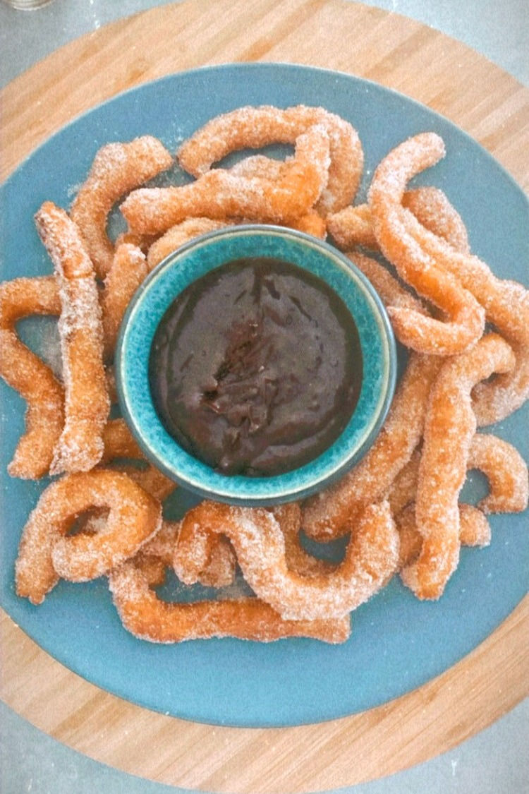
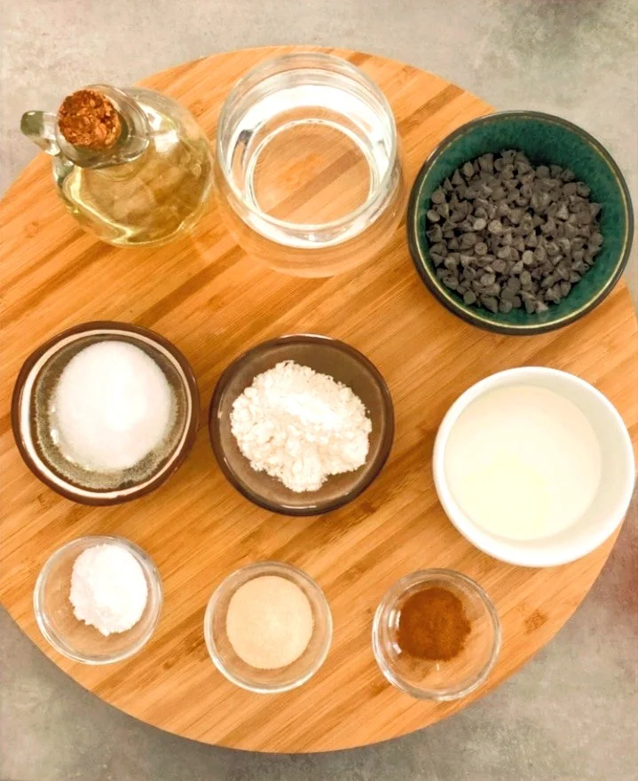

Շուրոս
Համեղ և արագ իսպանական աղանդեր՝ Շուրոս
Առողջ և համեղ դեսերտ պատրաստելը միշտ պահանջում է ստեղծագործական մոտեցում և կամք, հատկապես երբ պետք է հրաժարվել ամենահամեղ բաղադրամասերից։
Բայց երբ մենք արձակուրդում ենք, ահա այդ ժամանակ, մենք ուզում ենք վայելել այն ամբողջությամբ, այսպիսով այս բաժնում ես ընդգրկել եմ արձակուրդից արձակուրդ պատրաստվող ուտեստները։
 Նախապատրաստում 5 րոպե Պատրաստում 15 րոպեԲաղադրամասեր
Շաքարավազի և դարչինի խառնուրդ
- 55 գ շաքարավազ
- 2 ճ/գ աղացած դարչին
- 1 տուփ (8գ )վանիլին
Շուրոս
- 150 գ ալյուր
- 1 թ/գ փխրեցուցիչ
- Մի պտղունց աղ
- 1 ճաշի գդալ բուսական յուղ, ես սովորաբար օգտագործում եմ կանոլայի յուղ (canola or colza oil)
- 250 մլ եռման ջուր
- 500 մլ այլ բուսական կամ կանոլայի յուղ՝ տապակելու համար
Շոկոլադ
- 100 գ մուգ շոկոլադ կամ կիսաքաղցր շոկոլադե չիպսեր
- 100 մլ թանձր սերուցք
Պատրաստում
Շաքարավազի և դարչինի խառնուրդ
Խառնել շաքարավազը, դարչինը և վանիլինը:
Խմոր
- Թասի մեջ խառնել ալյուրը, փխրեցուցիչը և աղը:
- Ավելացնել ձեթն ու ջուրը և խառնել, ստանալ թանձր, կպչուն խմոր։
- Խմորը տեղափոխեք խմորի տոպրակի մեջ 8 մմ աստղանի ծայրով:
- Տաքացնել բուսական յուղը, մոտավորապես 5 սմ՝ խորը տապակի մեջ։
- Խմորը 15 սմ երկարությամբ լցնել յուղի մեջ, կտրել մկրատով (կտրեք յուղի մակերեսին մոտ՝ շաղ տալուց խուսափելու համար):
- Լցնել 3-ից 4, յուրաքանչյուր խմբաքանակի համար, ընդհանուր առմամբ կազմում է 10-ից 15:
- Տապակել 2-3 րոպե կամ մինչև ոսկեգույն դառնալը:
- Պատրաստի շուրոն տեղափոխել թղթով պատված ափսեի վրա:
- Յուրաքանչյուր շուրոն պատել շաքարավազի խառնուրդով։
- Մատուցել տաք շոկոլադե սոուսով:
Շոկոլադի սոուս
Խորը թավայի մեջ տաքացնել սերուցքը, ավելացնել շոկոլադը՝ խառնելով։Մի կողմ դնել 5 րոպեով, որպեսզի սառչի և մի փոքր թանձրանա։